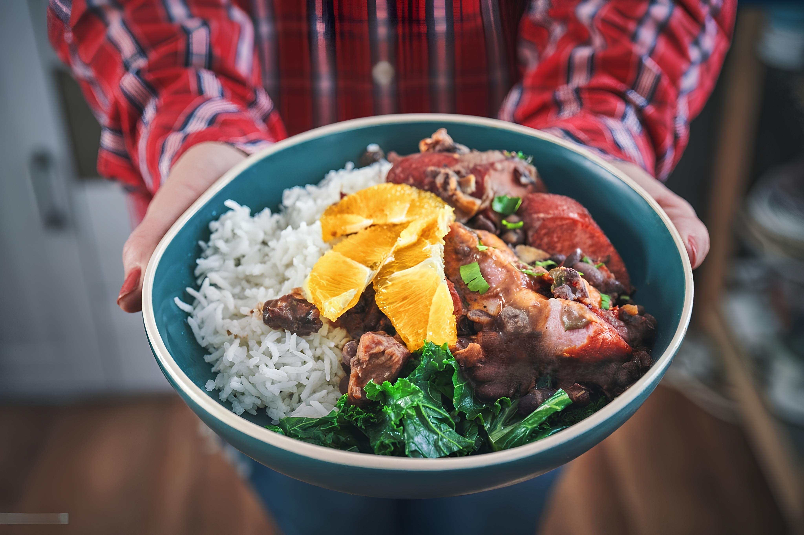

La feijoada est un plat très populaire au Brésil, Angola, Mozambique, Cap-Vert, Guinée-Bissau, Timor oriental, Macau et au Portugal, à base de haricots (feijão) et généralement de viande de porc. Originaire du Portugal, elle consiste en un ragoût de haricots blancs,marrons ou noirs, normalement servi avec de la viande et du riz blanc. La feijoada est souvent servie le samedi au restaurant, elle est l'occasion de réunions familiales et de rassemblements d'amis. D'un coût peu élevé, elle est appréciée par toutes les classes sociales


mais pas d'inquitude nous aller vous partager notre recette pour pouvoir le realiser a domicile en tout faciliter !!